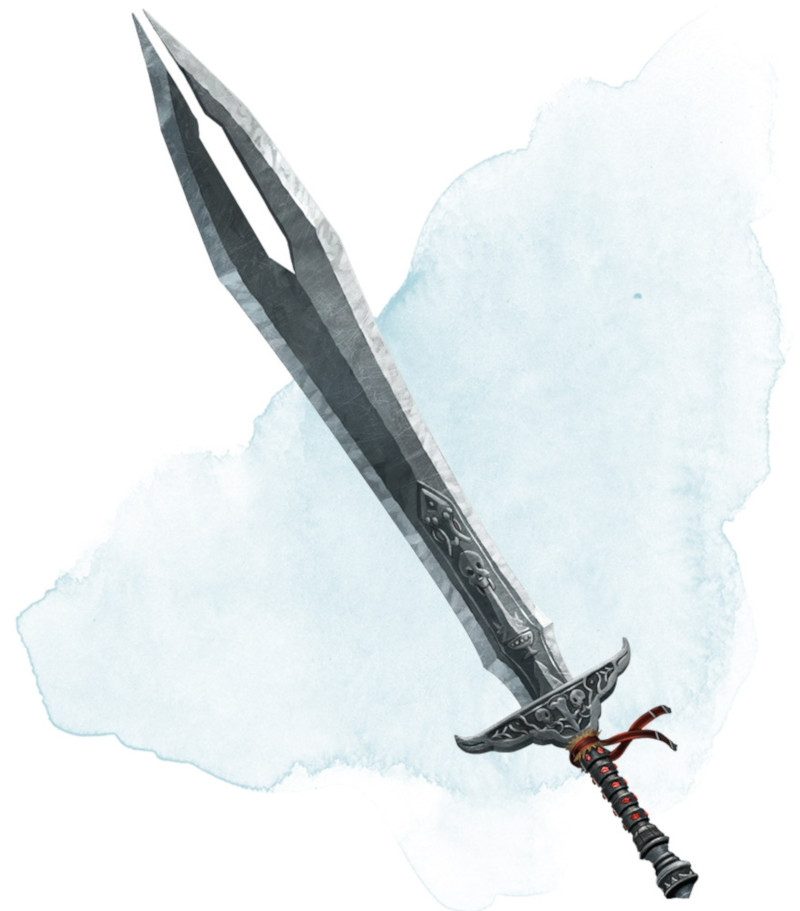

Épée voleuse de vie
Arme (toute épée), rare (nécessite un lien)
Lorsque vous attaquez une créature avec cette arme magique et obtenez un 20 au jet d'attaque, la cible subit 10 dégâts nécrotiques supplémentaires, à condition qu'elle ne soit pas un artificiel ou un mort-vivant. Vous gagnez un nombre de points de vie temporaires égal aux dégâts supplémentaires infligés.
Dungeon Master´s Guide (SRD)
